GitHub介绍：MuseTalk: Real-Time High Quality Lip Synchorization with Latent Space Inpainting。（翻译：实时高质量唇部同步）
这是和
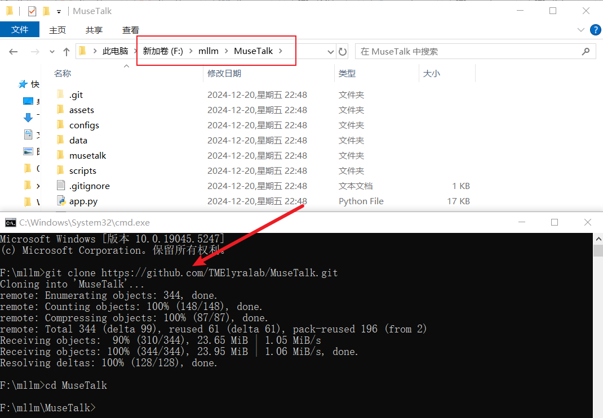
git clone https://github.com/TMElyralab/MuseTalk.git
cd MuseTalk
既然已经上了
# 创建虚拟环境
conda create -n MuseTalk python=3.10
# 激活虚拟环境
conda activate MuseTalk
# 退出虚拟环境
conda deactivate
# 删除虚拟环境
conda remove -n MuseTalk --all
# 安装依赖（GPU版本）
pip install -r requirements.txt
# 安装依赖（CPU版本）
pip install -r requirements-cpu.txt
或许今天（2024-12-21）的
CPU 版本的
torch==2.3.1 -i https://download.pytorch.org/whl/cpu
torchvision==0.18.1 -i https://download.pytorch.org/whl/cpu
torchaudio==2.3.1 -i https://download.pytorch.org/whl/cpu
diffusers==0.31.0
accelerate==0.28.0
tensorflow==2.17.0
tensorboard==2.17.0
opencv-python==4.9.0.80
soundfile==0.12.1
transformers==4.39.2
gdown==5.2.0
requests==2.28.2
imageio[ffmpeg]
omegaconf==2.3.0
ffmpeg-python==0.2.0
gradio==5.9.1
spaces==0.31.1
# moviepy==2.1.1
moviepy==1.0.3
GPU 版本的
--extra-index-url https://download.pytorch.org/whl/cu124
torch==2.3.1
torchvision==0.18.1
torchaudio==2.3.1
diffusers==0.31.0
accelerate==0.28.0
tensorflow==2.17.0
tensorboard==2.17.0
opencv-python==4.9.0.80
soundfile==0.12.1
transformers==4.39.2
gdown==5.2.0
requests==2.28.2
imageio[ffmpeg]
omegaconf==2.3.0
ffmpeg-python==0.2.0
gradio==5.9.1
spaces==0.31.1
# moviepy==2.1.1
moviepy==1.0.3
经过上面一番折腾，
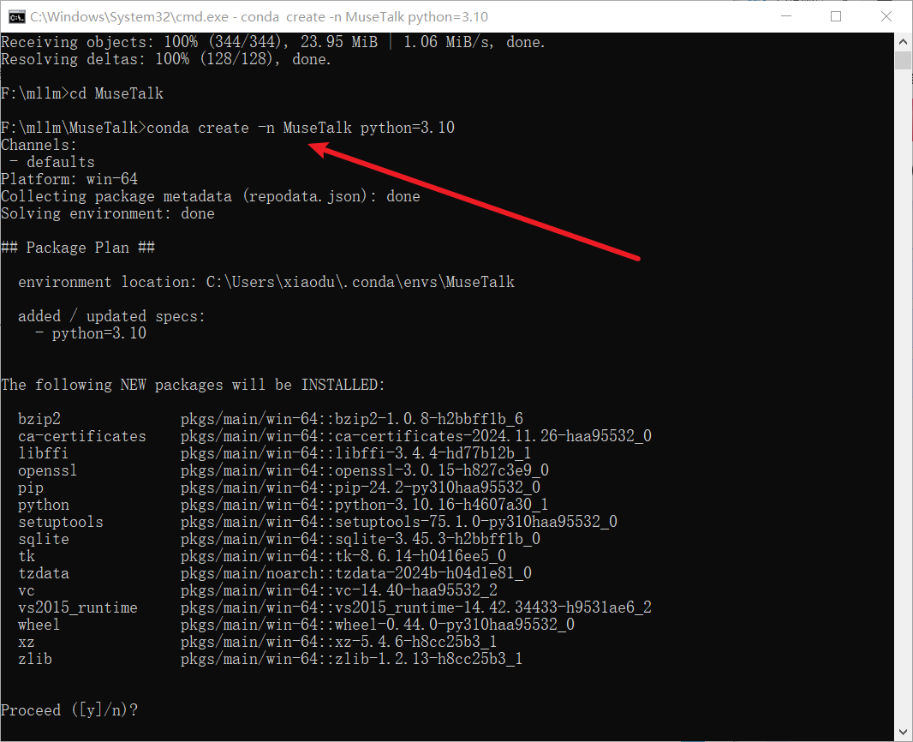
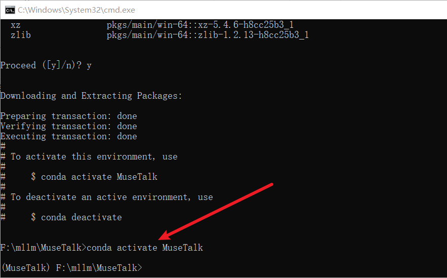
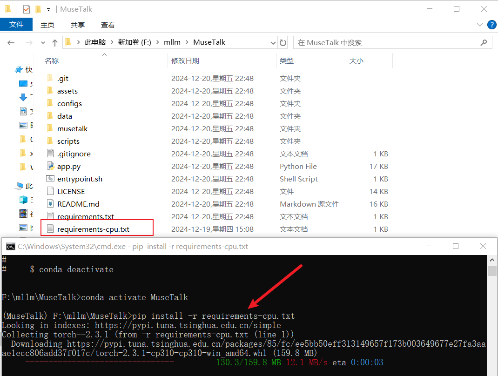
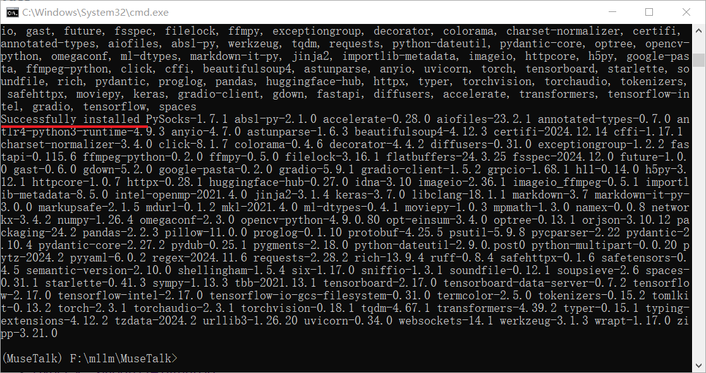
你以为这就完了？可以运行程序了？不！不！不，还得继续折腾
# MuseTalk GitHub 官方是这样写的
pip install --no-cache-dir -U openmim
mim install mmengine
mim install "mmcv>=2.0.1"
mim install "mmdet>=3.1.0"
mim install "mmpose>=1.1.0"
# 因为上面安装总是出问题，这里记录一下如何删除
mim uninstall mmpose
mim uninstall mmdet
mim uninstall mmcv
按照这个安装又出错了，他们之前的关系又乱套了，除了一大堆类似下面的错误：
# 在测试不同版本的时候出现了多次如下错误，这里列出一个举例
ERROR: pip's dependency resolver does not currently take into account all the packages that are installed. This behaviour is the source of the following dependency conflicts.
mmdet 3.3.0 requires mmcv<2.2.0,>=2.0.0rc4; extra == "mim", but you have mmcv 2.2.0 which is incompatible.
又是一番折腾终于从坑里爬出来了
pip install --no-cache-dir -U openmim
mim install mmengine
mim install "mmcv==2.1.0"
mim install "mmdet==3.2.0"
mim install "mmpose==1.2.0"
# pip list 查看安装的版本
mmcv 2.1.0
mmdet 3.2.0
mmengine 0.10.5
mmpose 1.2.0
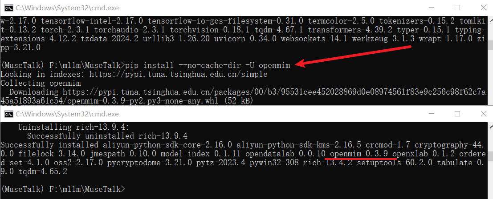
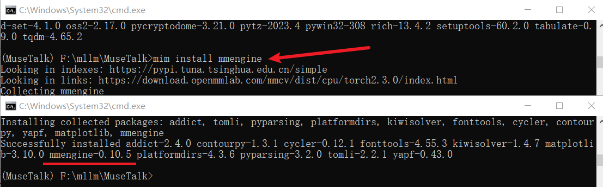
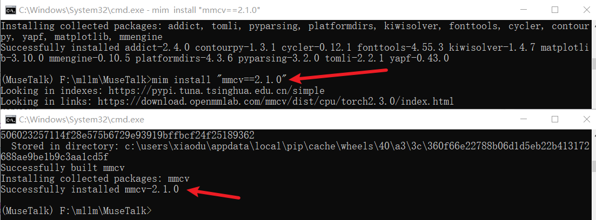
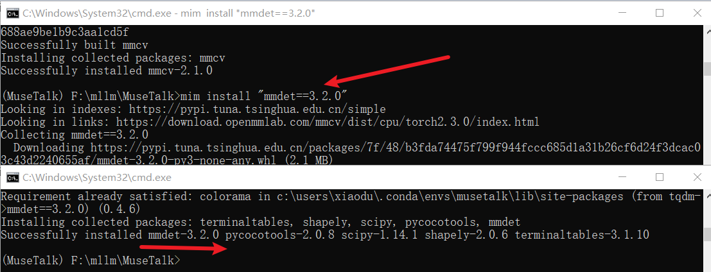
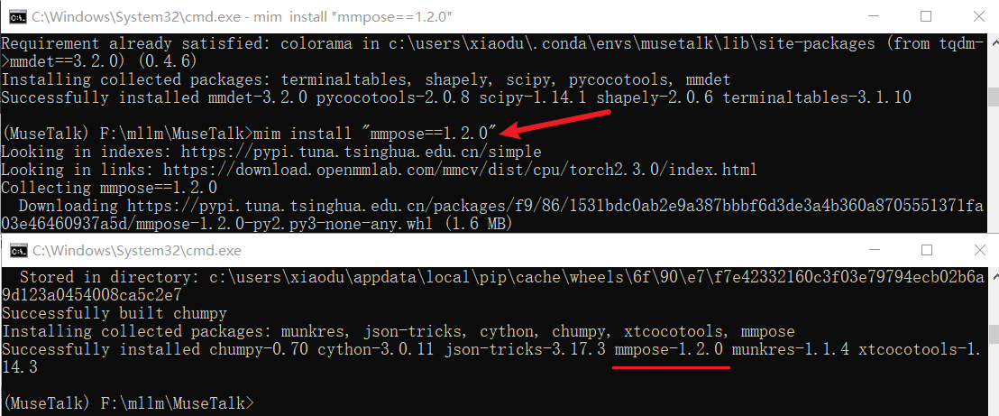
GitHub 上写的很清楚了，参照上面下载即可。
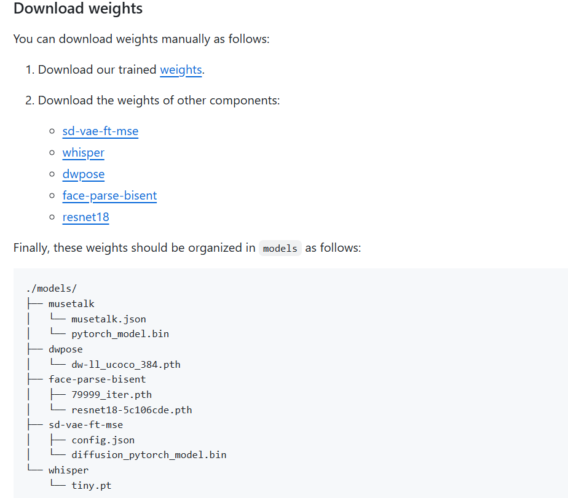
终于到了激动人心的时刻：终于可以启动项目了。稍后，稍后，还有一小步，先设置一下
# powershell
$Env:FFMPEG_PATH="D:\ProgramOther\ffmpeg-7.1-full_build\bin"
# cmd
set FFMPEG_PATH="D:\ProgramOther\ffmpeg-7.1-full_build\bin"
迫不及待了，赶紧执行
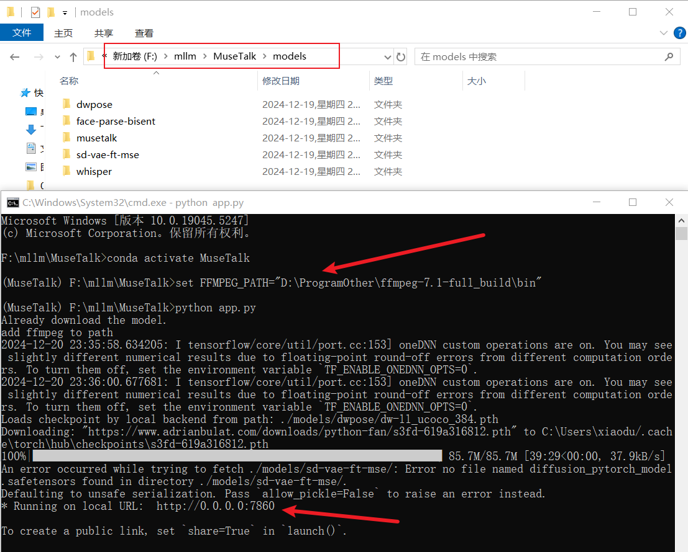
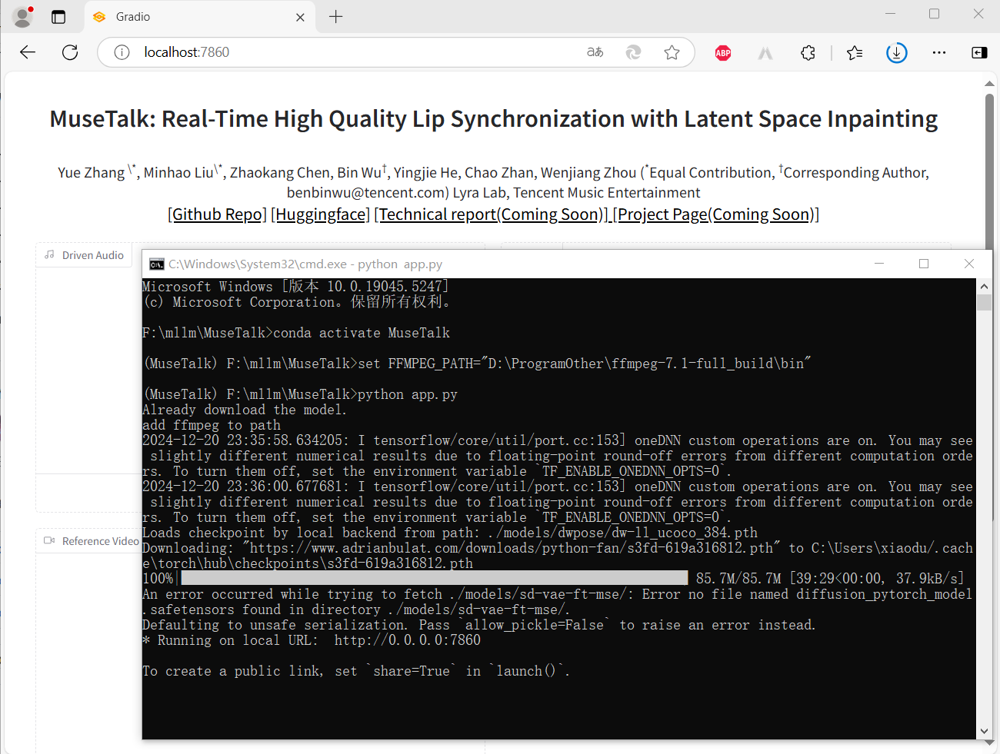
虽然程序启动成功了，但是在输出日志中发现了两个问题：
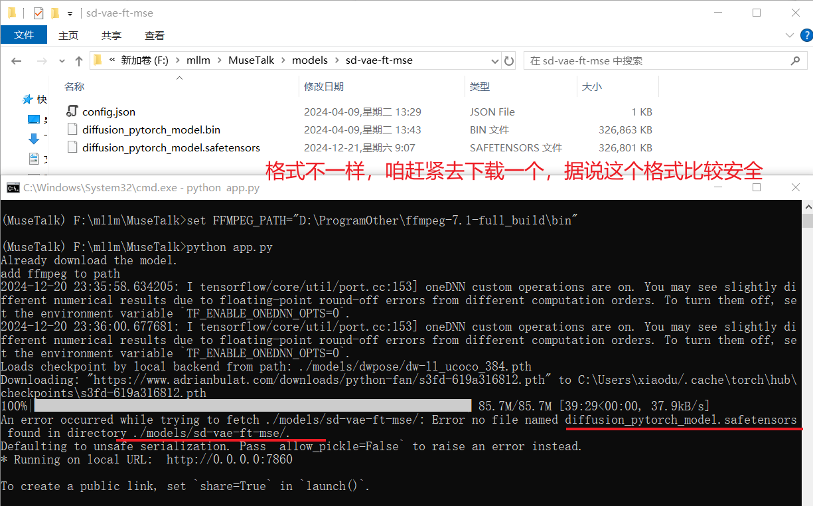
咱的老朋友还是太老了，行动有些跟不上了，小测一下就花费了很长时间，但是不管怎么说最后是成功了
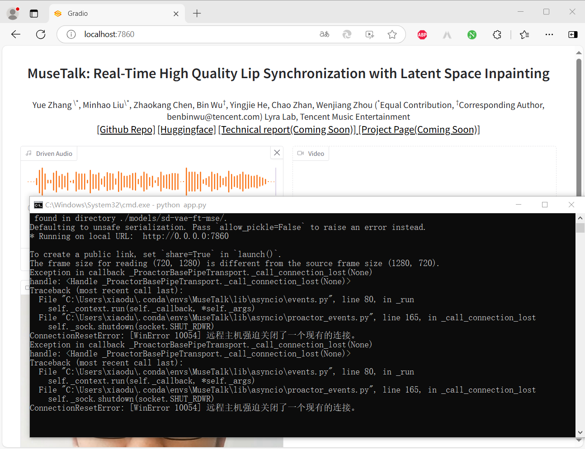
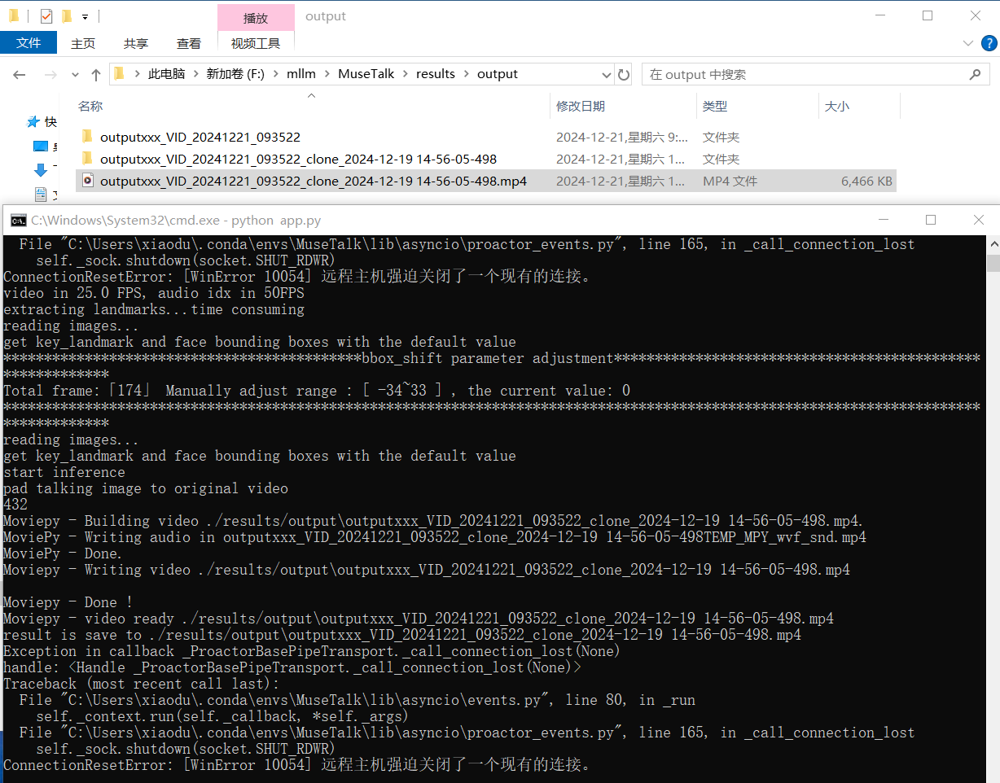
这次测试是用录的自己的视频测试的，就不露面了啊！